LED Frame
A framed 64×32 RGB LED panel on my wall, driven by an ESP32. It shows the time, live weather acted out by a little stick figure, messages and alerts, and it's controlled from Home Assistant or a phone page on my Wi-Fi.
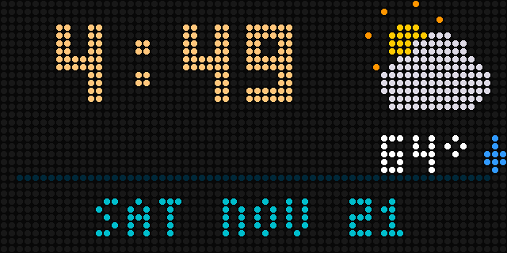
The clock face
Big amber time, an animated weather icon, the temperature, and a strip that alternates the date with today's high and low. A blue drop blinks when rain is on the way.
The weather, acted out
Instead of an icon, the Weather screen has a stick figure living through whatever's happening outside. Every scene is animated: rain splashes, waves roll, the wind tears his hat off.
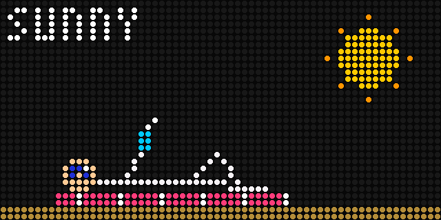
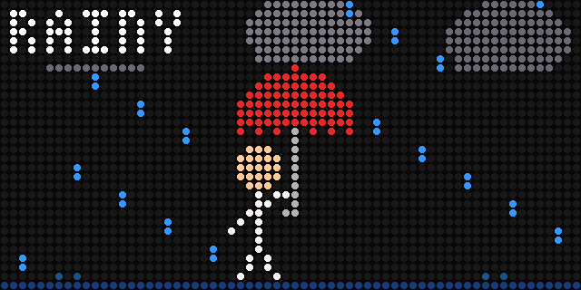
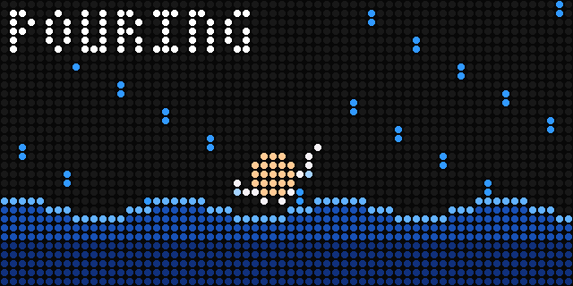
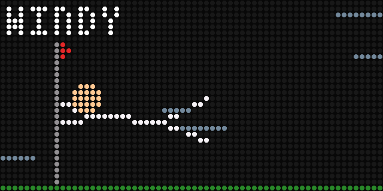
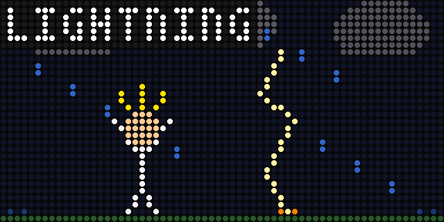
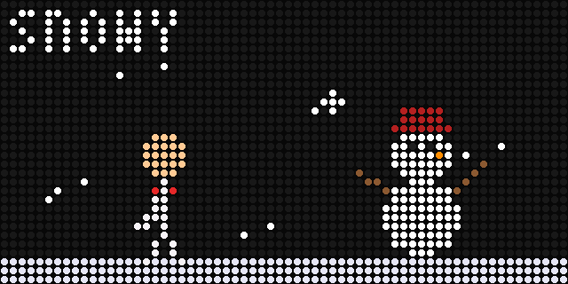
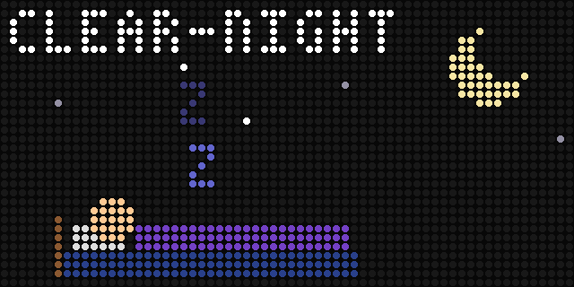
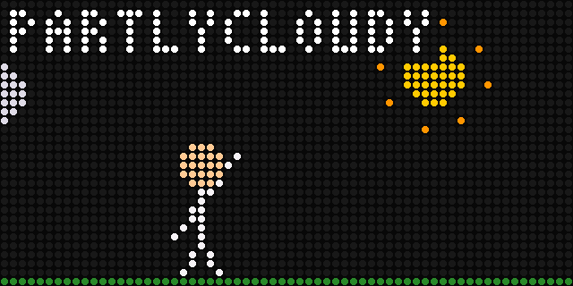
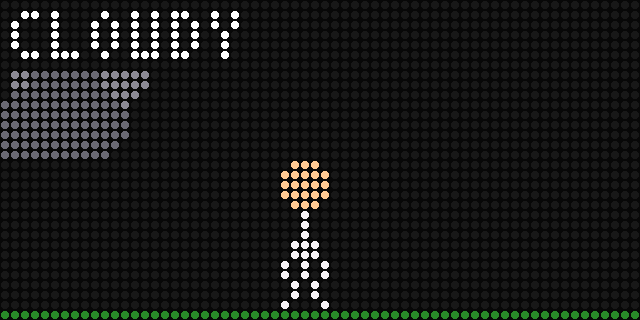
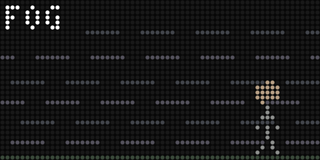
Other screens
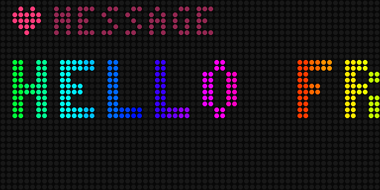
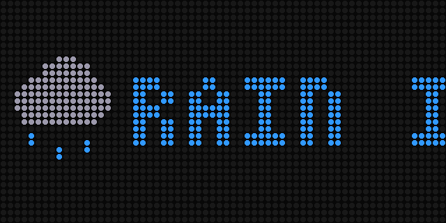
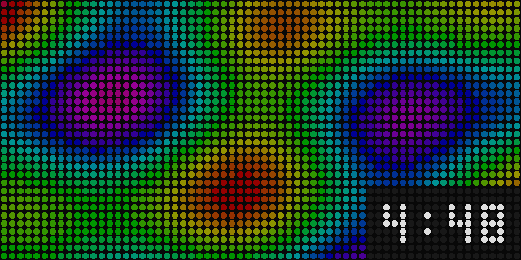
How it works
Hardware
What I learned
- Ghosting was a clock-phase problemWith most of the panel lit, black pixels beside bright text glowed. Latch blanking and colour depth did nothing; this panel latches data on the other clock edge.
- Black is invisible on LEDsSunglasses drawn in black just looked like a hole in his head. Detail on a dark display has to be drawn with light.
- Very dim colours flickerAt low brightness the faintest colour levels shimmer, so the art palette snaps each channel to off or a safe minimum.
- Strapping pins biteA panel data line on GPIO 12 could stop the ESP32 from booting. Moving it to GPIO 33 fixed it.